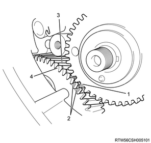
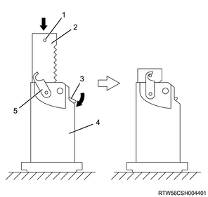
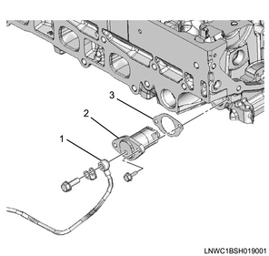
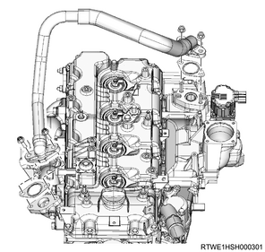
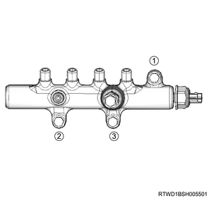
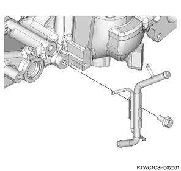
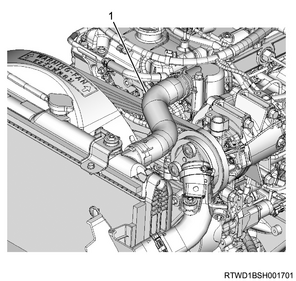
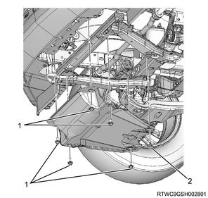

Fuel temperature sensor installation (4JK1)
1. Fuel temperature sensor installation
1. Install the O-ring to the fuel temperature sensor.
2. Install the fuel temperature sensor to the fuel supply pump.
Tightening torque： 22 N・m { 2.2 kgf・m / 16 lb・ft }

2. Fuel supply pump installation
1. Apply soapy water to the O-ring.
2. Install the O-ring to the fuel supply pump.
Caution
- Be careful not to twist it.
3. Install the fuel supply pump to the timing gear case.
Tightening torque： 25 N・m { 2.5 kgf・m / 18 lb・ft }

- Fuel supply pump
Note
- Confirm that the supply pump camshaft key is at a horizontal position on the right side.

3. Supply pump gear installation
1. Install the supply pump gear to the fuel supply pump.
Note
- Align the alignment mark of the supply pump gear and the mark on idle gear A.
- Verify that the supply pump gear and the main gear of idle gear A are engaged.
- Push in the supply pump gear while the supply pump gear is engaged with the sub gear of idle gear A.

- Alignment mark of the supply pump gear
- Idle gear marking
- Main gear
- Sub gear
4. Sprocket installation
1. Install the timing chain to the sprocket.
Note
- Install it to each sprocket.
2. Align the timing chain to the alignment mark.
Note
- Align the timing mark of the crankshaft sprocket and the timing chain link of the dark plate.
- Align the timing mark of the fuel supply sprocket and the timing chain link of the yellow plate.
3. Temporarily tighten the sprocket to the supply pump gear.
Note
- Align the dowel pin attached to the gear, and install the fuel supply pump sprocket to the fuel pump shaft.
- Tighten the fuel supply pump shaft nut by hand.

- Timing mark
- Dark plate
- Timing mark
- Yellow plate
5. Timing chain lever pivot installation
1. Temporarily tighten the timing chain lever pivot to the timing chain tension lever.
Note
- Tighten the pivot bolt by hand.
- Confirm that the tension lever moves smoothly.

6. Timing chain tensioner installation
1. Connect the hook to the pin.
Note
- Keep the state where the latch is being pushed.
- Insert the plunger.
- Install the hook to the pin, and fasten the plunger.

- Pin
- Plunger
- Latch
- Timing chain tensioner
- Hook
2. Install the timing chain tensioner to the cylinder head.
Caution
- Do not reuse the gasket.
Tightening torque： 10 N・m { 1.0 kgf・m / 89 lb・in }
3. Install the oil pipe to the timing chain tensioner.
Tightening torque： 14.7 N・m { 1.5 kgf・m / 11 lb・ft }

- Oil pipe
- Timing chain tensioner
- Gasket
4. Disconnect the hook from the pin.
Note
- Lightly push the area indicated with an arrow in the diagram.
- The hook of the tensioner opens and the plunger pushes the tension lever to pull the chain.

7. Supply pump gear nut installation
1. Securely tighten the sprocket to the supply pump gear.
Tightening torque： 130 N・m { 13.3 kgf・m / 96 lb・ft }

- Nut
2. Securely tighten the timing chain lever pivot to the timing chain tension lever.
Tightening torque： 27 N・m { 2.8 kgf・m / 20 lb・ft }
8. Timing chain lower cover installation
1. Apply liquid gasket to the timing chain lower cover.
Note
- Apply ThreeBond 1207C or equivalent.
Bead height： 2.0 to 2.5 mm { 0.079 to 0.098 in }
Bead width： 2.0 to 2.5 mm { 0.079 to 0.098 in }
Caution
- Within 5 minutes of applying the liquid gasket, install the cover.

- Liquid gasket
- Bead height
- Bead width
2. Install the timing chain lower cover to the gear case cover.
Tightening torque： 10 N・m { 1.0 kgf・m / 89 lb・in }
9. Timing chain upper cover installation
1. Apply liquid gasket to the timing chain upper cover.
Note
- Apply ThreeBond 1217H or equivalent.
Bead height： 1.0 to 1.5 mm { 0.039 to 0.059 in }
Bead width： 2.0 to 2.5 mm { 0.079 to 0.098 in }
Caution
- Within 5 minutes of applying the liquid gasket, install the cover.

- Liquid gasket
- Bead height
- Bead width
Caution
- Wipe off any excess liquid gasket.
2. Install the timing chain upper cover to the cylinder head.
Tightening torque： 25 N・m { 2.5 kgf・m / 18 lb・ft }
10. Water pipe installation
1. Install the water pipe to the cylinder head assembly.
Tightening torque： 10 N・m { 1.0 kgf・m / 89 lb・in } Bolt, nut

2. Connect the turbocharger water feed hose to the outlet pipe.
11. Noise cover installation
1. Install the noise cover to the timing chain lower cover.
Tightening torque： 10 N・m { 1.0 kgf・m / 89 lb・in }

12. CMP sensor connect
1. Connect the connector to the CMP sensor.

- CMP sensor
13. Cylinder head cover installation
1. Apply liquid gasket to the cylinder head.
Note
- Apply ThreeBond 1217H or 1207C to the mating surface with the cylinder head.
Caution
- Within 5 minutes of applying the liquid gasket, install the cover.
- Remove any dust or sludge from the oil seal section on the injector connector side.
Bead width： 2.0 to 2.5 mm { 0.079 to 0.098 in }
Bead height： 1.0 to 1.5 mm { 0.039 to 0.059 in }

- Liquid gasket
- Bead width
- Bead height
2. Apply liquid gasket to the cylinder head.
Caution
- Do not reuse the cylinder head cover gasket.
Note
- Temporarily tighten in the order shown in the diagram.
Tightening torque： 5 N・m { 0.5 kgf・m / 44 lb・in }

Note
- Final tighten in the order shown in the diagram.
Tightening torque： 9 N・m { 0.9 kgf・m / 80 lb・in }
3. Connect the harness clip to the cylinder head cover.

14. Blow-by hose connect
1. Connect the blow-by hose to the cylinder head cover.
15. Fuel leak-off hose installation
1. Install the leak-off pipe to the injector.

- Leak-off pipe
- Clip
2. Install the fuel leak-off hose to the leak-off pipe.

- Fuel leak-off hose
- Connector
Caution
- Do not reuse the leak-off pipe and the clip.
16. Vacuum pipe installation
1. Install the vacuum pipe to the cylinder head cover.
Note
- Install it as a set with the harness bracket. (for LHD models)
Tightening torque： 25 N・m { 2.5 kgf・m / 18 lb・ft }
17. Bracket installation
1. Install the bracket to the cylinder head cover.
Note
- Install as a set with the turbocharger control solenoid.
Tightening torque： 25 N・m { 2.5 kgf・m / 18 lb・ft }
2. Connect the connector to the turbocharger control solenoid.
3. Connect the vacuum hose to the turbocharger control solenoid.

18. EGR pipe installation
Note
- The following applies to models with an EGR.
1. Install the EGR pipe to the inlet manifold and the exhaust manifold.
Tightening torque： 27 N・m { 2.8 kgf・m / 20 lb・ft }
Caution
- Do not reuse the gasket.

19. Exhaust manifold heat protector installation
1. Install the exhaust manifold heat protector to the exhaust manifold.
Tightening torque： 25 N・m { 2.5 kgf・m / 18 lb・ft }

20. Turbocharger water feed pipe connect
1. Connect the turbocharger water feed hose to the water feed and return pipe.

- Turbocharger water feed hose
- Turbocharger water return hose
21. Common rail (fuel rail) assembly installation
1. Install the common rail (fuel rail) assembly to the cylinder block.
Note
- Install the part together with the common rail (fuel rail) bracket.
- Install in the order shown in the diagram.
Caution
- Do not grasp the pressure sensor during work.
- Be careful not to damage the connector unit of the pressure sensor.
Tightening torque： 25 N・m { 2.5 kgf・m / 18 lb・ft }


- Vacuum pipe
- Common rail (fuel rail) bracket
- Common rail (fuel rail) assembly
22. Vacuum pipe installation
1. Install the vacuum pipe to the cylinder block.
Tightening torque： 25 N・m { 2.5 kgf・m / 18 lb・ft }
23. Swirl control solenoid valve installation
1. Connect the vacuum hose to swirl control solenoid valve.
2. Install swirl control solenoid valve to the bracket.
Tightening torque： 15 N・m { 1.5 kgf・m / 11 lb・ft }
3. Connect the connector to swirl control solenoid valve.
24. Injection pipe installation
1. Apply the engine oil to the injection pipe.
Note
- Apply engine oil to the injector side sleeve nut threaded portion and the O-ring of the injector.
2. Temporarily tighten the injection pipe to the injector and the common rail (fuel rail) assembly.
Note
- Temporarily tighten the sleeve nut by hand until the nut does not turn.

3. Temporarily tighten the clip to the injection pipe.
4. Securely tighten the injector clamp to the cylinder head.
Tightening torque： 26 N・m { 2.7 kgf・m / 19 lb・ft }
5. Securely tighten the injection pipe to the injector and the common rail (fuel rail) assembly.
Tightening torque： 29.5 N・m { 3.0 kgf・m / 22 lb・ft } Injector side
Tightening torque： 29.5 N・m { 3.0 kgf・m / 22 lb・ft } Common rail (fuel rail) side
Caution
- Do not reuse the injection pipe.
6. Securely tighten the clip to the injection pipe.
Tightening torque： 10 N・m { 1.0 kgf・m / 89 lb・in }
25. FRP sensor connect
1. Connect the connector to the FRP sensor.
26. Leak-off pipe installation
1. Install the leak-off pipe to the fuel supply pump and the common rail (fuel rail) assembly.
Tightening torque： 10.3 N・m { 1.1 kgf・m / 91 lb・in }

- Leak-off pipe
27. Leak off pipe installation
1. Install the harness bracket to the inlet manifold and the common rail (fuel rail) bracket.
2. Install the leak-off pipe to the inlet manifold.
Tightening torque： 25 N・m { 2.5 kgf・m / 18 lb・ft }

3. Connect the fuel leak-off hose to the leak-off pipe.
4. Connect the vacuum hose to the vacuum pipe.
28. Vacuum hose connect
1. Connect the vacuum hose to the vacuum pipe.
29. Fuel hose connect
1. Connect the fuel hose to the fuel supply pump.

- Fuel hose
2. Connect the fuel hose to the leak-off pipe.
30. Fuel feed pipe installation
1. Install the fuel feed pipe to the fuel supply pump and the common rail (fuel rail) assembly.
Tightening torque： 29.5 N・m { 3.0 kgf・m / 22 lb・ft }

- Fuel feed pipe
Caution
- Do not reuse the fuel feed pipe.
31. Starter motor installation
1. Install the starter motor to the rear plate.
Tightening torque： 94 N・m { 9.6 kgf・m / 69 lb・ft }
2. Connect the earth cable to the starter motor.
32. A/C compressor bracket installation
1. Install the A/C compressor bracket to the cylinder head.
Note
- Tighten in the order shown in the diagram.
Tightening torque： 25 N・m { 2.5 kgf・m / 18 lb・ft }

33. A/C compressor assembly connect
1. Install the A/C compressor assembly to the A/C compressor bracket.
Tightening torque： 51 N・m { 5.2 kgf・m / 38 lb・ft }

- A/C compressor bracket
- A/C compressor
34. Oil level gauge guide tube installation
1. Apply the engine oil to the O-ring.
2. Install the oil level gauge guide tube to the crankcase.
Tightening torque： 25 N・m { 2.5 kgf・m / 18 lb・ft }
35. Tension pulley installation
1. Install the tension pulley to the cylinder head.
Tightening torque： 25 N・m { 2.5 kgf・m / 18 lb・ft }

36. A/C compressor drive belt installation
1. Install the A/C compressor drive belt to the pulley.

- A/C compressor drive belt
37. A/C compressor drive belt adjustment
1. Adjust tension to the specified value using a tension meter.
Note
- When adjusting the amount of flex to the original value
- Apply a load to measurement points 2, 3, and 4 of the A/C compressor drive belt and adjust the amount of flex.
Load： 98 N { 10 kg / 22 lb }
| Measurement point 2 | |
| Amount of flex | |
| For a new product | ： 12.4 to 16.4 mm { 0.488 to 0.646 in } |
| When reused | ： 16.5 to 19.1 mm { 0.650 to 0.752 in } |
| Measurement point 3 | |
| Amount of flex | |
| For a new product | ： 12.5 to 16.5 mm { 0.492 to 0.650 in } |
| When reused | ： 16.5 to 19.1 mm { 0.650 to 0.752 in } |
| Measurement point 4 | |
| Amount of flex | |
| For a new product | ： 15.9 to 20.7 mm { 0.626 to 0.815 in } |
| When reused | ： 20.7 to 23.7 mm { 0.815 to 0.933 in } |
Note
- When adjusting the tension by using a sonic tension meter
- Measure the frequency at measurement points 2, 3, and 4 with a sonic tension meter.
| Measurement point 2 | |
| Frequency | |
| For a new product | ： 92 to 112 Hz |
| When reused | ： 80 to 92 Hz |
| Measurement point 3 | |
| Frequency | |
| For a new product | ： 92 to 112 Hz |
| When reused | ： 79 to 91 Hz |
| Measurement point 4 | |
| Frequency | |
| For a new product | ： 70 to 86 Hz |
| When reused | ： 62 to 70 Hz |

- Measurement point 1
- Measurement point 2
- Measurement point 3
- Measurement point 4
- Adjust bolt (A/C compressor drive belt)
Note
- After adjusting the tension, tighten the tensioner fixing nut.
Tightening torque： 41 N・m { 4.2 kgf・m / 30 lb・ft }
38. Fan shroud installation
1. Install the fan guide to the radiator.
Note
- Install the lower fan guide together with the fan shroud.
39. Cooling fan installation
1. Install the cooling fan to the fan clutch assembly.
Tightening torque： 8 N・m { 0.8 kgf・m / 71 lb・in }

- Fan clutch assembly
- Cooling fan
40. Fan guide installation
1. Install the fan guide to the radiator.
Note
- Install the upper fan guide.

- Upper fan guide
- Clip
- Lower fan guide
- Fan shroud
41. Radiator reserve tank installation
1. Install the radiator reserve tank to the upper fan guide.
Tightening torque： 8 N・m { 0.8 kgf・m / 71 lb・in }

2. Connect the radiator reserve tank hose to the radiator.
Note
- When the radiator reserve tank is dirty, clean it before installation.
- Clean the radiator reserve tank using detergent.
- Scrub inside with detergent and water.
- Wash with clean water, and drain the water.
42. Battery installation
1. Install the battery to vehicle.

- Battery cable
- Battery bracket
- Earth
2. Install the battery bracket to the frame.
Tightening torque： 4 N・m { 0.4 kgf・m / 35 lb・in } Battery side
Tightening torque： 20 N・m { 2.0 kgf・m / 15 lb・ft } Frame side
3. Connect the battery cable to the battery.
4. Connect the battery ground cable to the frame.
43. Radiator upper hose installation
1. Install the radiator upper hose to the water outlet pipe and the radiator.
Tightening torque： 5 N・m { 0.5 kgf・m / 44 lb・in } Hose clip

- Radiator upper hose
44. Intake air duct installation
1. Install the intake air duct to the intake throttle valve and the intercooler.
Note
- Align the marks on the pipe side and hose side.
Tightening torque： 10 N・m { 1.0 kgf・m / 89 lb・in } Bolt
Tightening torque： 4 N・m { 0.4 kgf・m / 35 lb・in } Clamp (Intake throttle side)
Tightening torque： 5 N・m { 0.5 kgf・m / 44 lb・in } Clamp (Intercooler side)

45. Boost pressure sensor connect
1. Connect the connector to the boost pressure sensor.

46. Intake air duct installation
1. Install the intake air duct to the turbocharger and the intercooler.
Caution
- Referring to the diagram, face the threaded portion of the clamp toward the engine front.
Tightening torque： 25 N・m { 2.5 kgf・m / 18 lb・ft } Nut, bolt
Tightening torque： 4 N・m { 0.4 kgf・m / 35 lb・in } Clamp (Turbocharger side)
Tightening torque： 5 N・m { 0.5 kgf・m / 44 lb・in } Clamp (Intercooler side)

47. Engine cover installation
1. Install the engine cover to the engine.

- Engine cover
48. Air cleaner assembly installation
1. Install the air cleaner assembly to vehicle.
Tightening torque： 20 N・m { 2.0 kgf・m / 15 lb・ft }

- Air cleaner assembly
- MAF sensor
- Vacuum hose
- Blow-by hose
- Intake pipe
- Barometric pressure sensor
2. Connect the intake pipe to the turbocharger assembly.
Tightening torque： 4 N・m { 0.4 kgf・m / 35 lb・in }
Note
- Install by aligning the alignment mark position as shown in the diagram.

- Alignment mark
3. Connect the vacuum hose to the air cleaner assembly.
4. Connect the harness connector to the barometric pressure sensor.
5. Connect the harness connector to the MAF sensor.
49. Fuel air bleed
1. Press the priming pump.
Note
- Press the priming pump until it gets stiff.

- Priming pump
- Fuel filter with the sedimenter
Caution
- Insufficient air removal work may lead to malfunction of the engine.
50. Coolant filling
1. Replenish the radiator with coolant.
Note
- Use the coolant contains 50 % anti-freeze solution.
- Pour coolant up to the filler neck.
2. Replenish the radiator reserve tank with coolant.
Note
- Pour coolant up to the MAX line.
3. Install the radiator cap to the radiator.
51. Front propeller shaft assembly installation
52. Underguard installation
Note
- The following applies to models with an under air deflector.
1. Install the under air deflector to the frame.
Note
- Tighten the clip and the 5 bolts.
Tightening torque： 42 N・m { 4.3 kgf・m / 31 lb・ft }

- Bolt
- Clip
Note
- The following applies to models with front and rear underguard.
2. Install the rear underguard to the frame.
Note
- Tighten the 4 bolts.
Tightening torque： 42 N・m { 4.3 kgf・m / 31 lb・ft }
3. Install the front underguard to the frame.
Note
- Tighten the 5 bolts.
Tightening torque： 42 N・m { 4.3 kgf・m / 31 lb・ft }

- Front underguard
- Rear underguard
- Bolt
Note
- The following applies to models with front and rear underguard and an oil pan guard.
4. Install the rear underguard to the frame.
Note
- Tighten the 4 bolts.
Tightening torque： 42 N・m { 4.3 kgf・m / 31 lb・ft }
5. Install the oil pan guard to the frame.
Note
- Tighten the 4 bolts.
Tightening torque： 90 N・m { 9.2 kgf・m / 66.4 lb・ft }
6. Install the front underguard to the frame.
Note
- Tighten the 5 bolts.
Tightening torque： 42 N・m { 4.3 kgf・m / 31 lb・ft }

- Front underguard
- Oil pan guard
- Bolt oil pan guard
- Bolt
- Rear underguard
53. Battery ground cable connect
1. Connect the battery ground cable to the battery.
2. Close the engine hood assembly.
3. Lower vehicle.